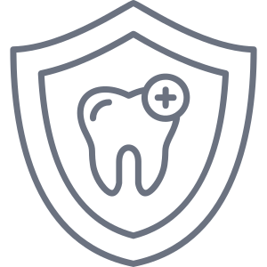

Akses Perkhidmatan Pergigian
Status akses perkhidmatan mengikut daerah.
info lanjutKesihatan Pergigian Sekolah
Pra sekolah, sekolah rendah dan menengah.
info lanjutIndikator Prestasi Utama (KPI)
Sasaran utama kesihatan pergigian.
info lanjutTenaga Kerja Pergigian
Latihan & purata hasil kerja.
info lanjut Program Pencegahan Pergigian
MMI, klinikal pencegahan karies & outreach.
info lanjut